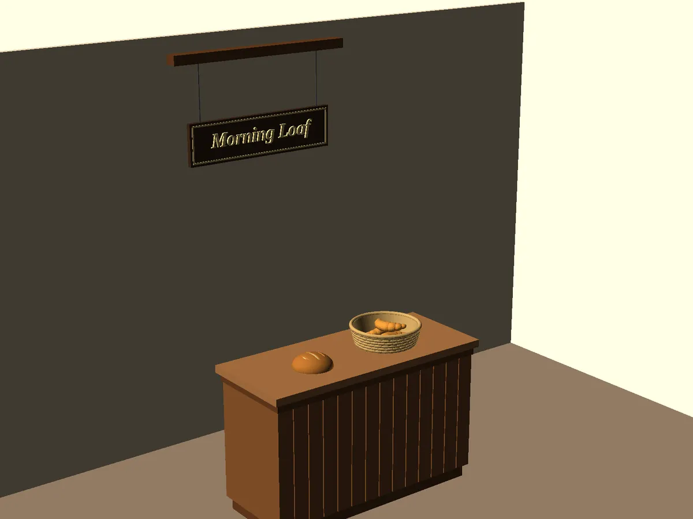

← Blender, Unity & Godot MCP: the test
RobertCoop/openscad-mcp: test run, 2026-11-08
Claude Code (Claude Opus 5.5) used this tool on the same brief as every other run: a small bakery counter scene, rendered at 1600 x 1200, in a throwaway Linux sandbox with Blender 3.4, OpenSCAD and a headless Chromium. Repo commit bde0b238c29c. Brief · All results

Checked
| Item of the brief | In the render |
|---|---|
| a wooden counter | yes |
| the round loaf | yes |
| the wicker basket | yes |
| three croissants | yes |
| the hanging sign reading Morning Loaf | yes |
| light from the left | yes |
| the view from slightly above | yes |
| 1600 x 1200 | yes |
| a scene file | yes |
Sign read by OCR; croissants counted in the scene file (3); size from the file ([1600, 1200]); the rest by gpt-6-astra. Judge: looks 4/5, follows the brief 5/5. Glitches it saw: none. Clear, coherent bakery counter scene with the requested objects and lighting.
3.5 minutes (installing the tool included), 24 agent turns, $0.70 at API prices. Files: scene.scad.
The agent's last words
an't be moved or tinted. I suggested warm morning light with warm colours, and the faces turned to the left come out brightest. But the back wall and the counter front, which face the camera, render quite dark, and there are no real shadows or sunlight. - **How the PNG was made:** the tool's render function shrinks images to at most 1568 px wide. For the final image I ran OpenSCAD directly with the same command the tool uses (same preview mode and colour scheme), at full size and with my own camera position. DELIVERABLE: /home/runner/work/output/scene.scad, /home/runner/work/output/render.png